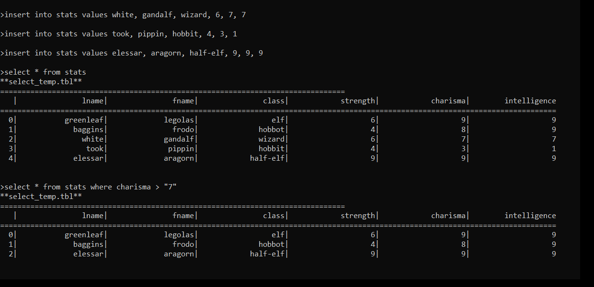
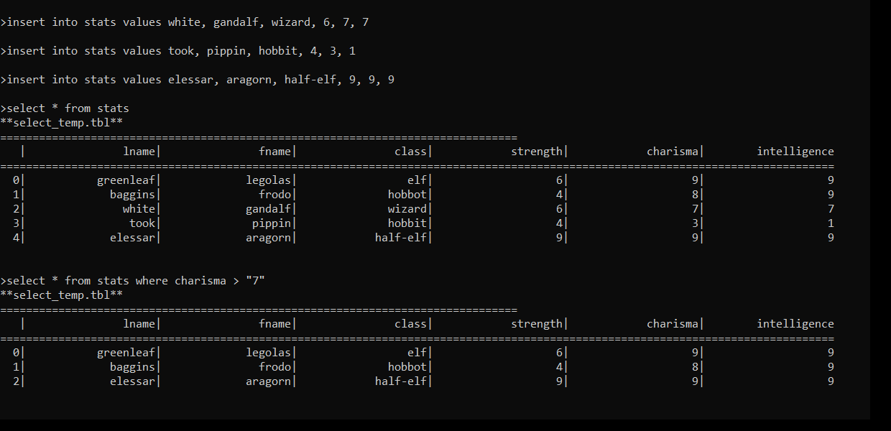

Language C++ Tools Qt Creator (qmake) Concepts SQL, Data Structures, B+ Trees, Object-Oriented Programming, State Machine
OVERVIEW
Executable C++ application that creates records database based on user command input. Database includes elements which can be dynamically modified, and efficient search algorithms for conditional values. Additional database tables can be created through user-defined search filtering. Program involves SQL command parsing, custom multi maps through linked lists and B+ Trees, and file reading/writing.
CONCEPTS
SQL Syntax
SQL command parsing syntax
State machine recursion
Data Structures
Templated classes and type casting
Linkedlists, queues, stacks, nodes
B+ Trees
dynamic linked list children, leaf nodes, balancing
Object-Oriented Programming
Headpointers and tailpointers, dynamic memory allocation
Language C++ Plugin SFML Tools Qt Creator (qmake) Concepts Shunting Yard-Algorithm, Object-Oriented Programming, Linked Lists
OVERVIEW
Executable C++ application that accepts a user-inputted mathematical equation and outputs a visual, animated graph. Accepts linear and trigonemetric equations. Visual graph includes panning, zoom, animation, and linear/polar graph toggle.
Language C++ Plugin SFML Tools Qt Creator (qmake) Concepts 2D Arrays, File Input/Output
OVERVIEW
Executable C++ application that generates a visual simulation of Conway's Game of Life.
UI Allows simulation and UI manipulation. Features save/load simulation through reading/writing text file. Made through 2D arrays and basic C++ functions.
C O U R S E S
Education
B.S. Computer Science: Computer Game Design
University of California, Santa Cruz
June 2020
 
